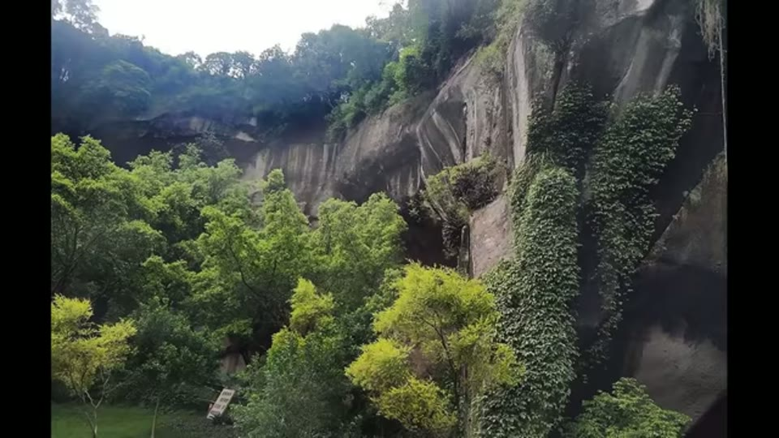
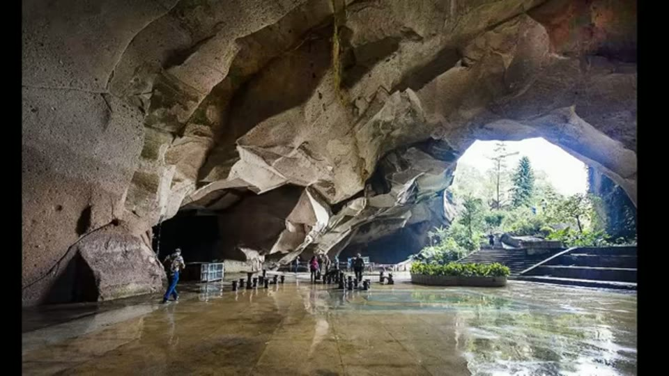
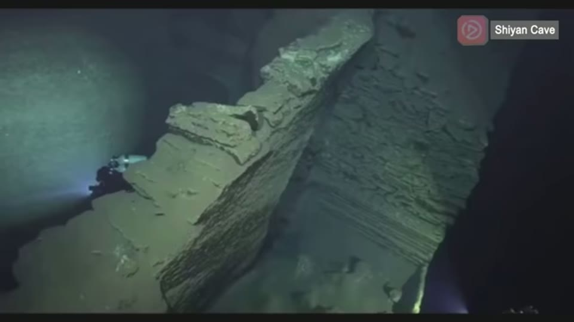
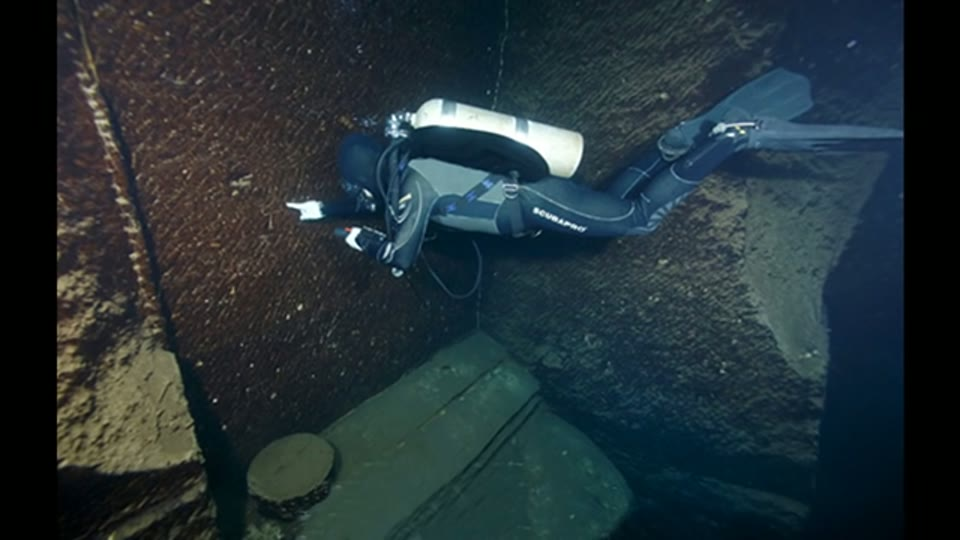
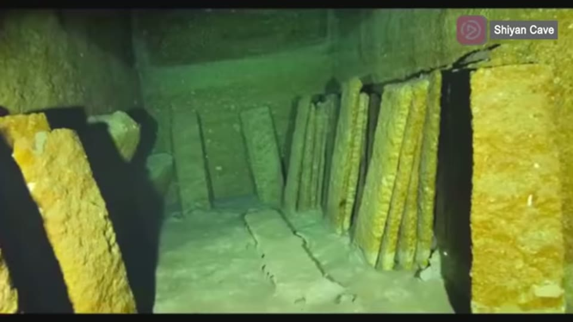
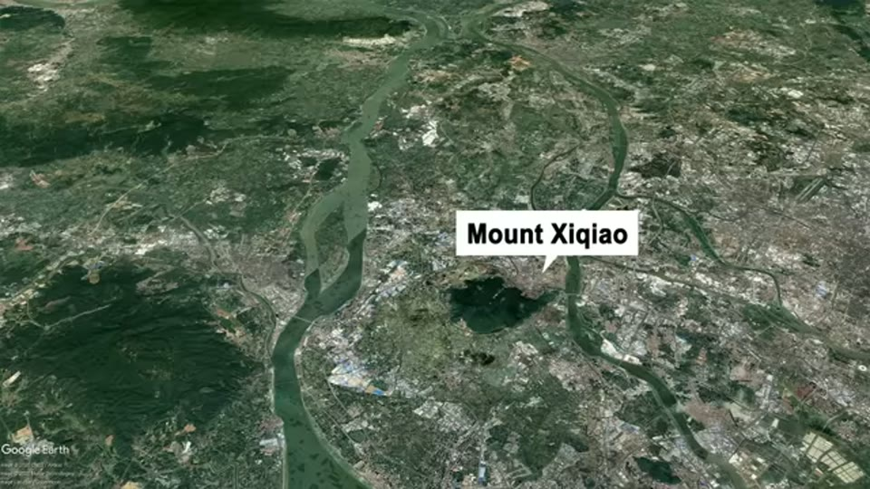

Curious Being
Underwater Volcanic Cave: Was This a Prehistoric Gold Mine?
Tina · 14 min · watch on YouTube · summarised 2026-08-22
Shiyan Cave sits on a peak of Mount Xiqiao in southern China, an extinct volcano of 40–50 million years standing between two rivers on the Pearl River Delta 00:27–01:12. It is conventionally described as an ancient quarry, over 1,000 years old, abandoned when it flooded.
Cave divers reported the underwater extent in 2009 02:26–02:55. The submerged cave is estimated at 60,000 m², about 15 acres, and because it has been under water it escaped both weathering and vandalism — the walls are preserved and the water is clear. Divers found steps descending, stacked stone slabs of the kind used for paving in ancient China, multiple chambers with connecting passages, and oil lamp stands, bowls and bamboo ladders. Archaeologists made a 3D model with laser and sonar. The floor is under thick silt. The deepest anyone has reached is 40 m, and nobody has found the bottom.

From outside there is almost nothing to see: a crack in a cliff, screened by trees.

The dry part of the cave, and the scale she says would hold a thousand people. What the divers explored continues below the water from here.
She takes it as three separate puzzles. The third is much the strongest.
Mystery 1 — the tool marks
Large, uniform marks on almost straight walls, which she says are "fairly identical" to Yangshan Quarry, Baalbek and Petra 03:53–04:12. The argument that hand tools cannot produce them is not made here — she refers back to her earlier video for it.


Large regular marks on near-straight faces, preserved because the cave has been under water and untouched since it flooded.
One point is specific to this site and is a good one: the cave has been under water and untouched, so whatever made the marks did not make them recently.
Then the observation that matters most 04:59–05:13. Inside the same cave there are two qualities of work:
| the crude work | the fine work |
|---|---|
| thin stone slabs, steps piled from rubble | large uniform marks on straight walls |
| what a mason with hand tools leaves | what she argues no hand tool leaves |
Her conclusion is that these are not the same workers — that Chinese masons of about a thousand years ago reoccupied and quarried an opening that was already there, working the outer parts by oil lamp and never going deep, because hauling slabs out of a fifteen-acre cave by lamplight is not practical.

Two qualities of work in the same cave: thin slabs and rubble-piled steps against the large uniform marks on the walls. She argues these are not the same workers.
Mystery 2 — water 100 m too high
The numbers are the substance here 05:26–05:55. The cave water stands at over 100 m altitude. The water table at the two nearby rivers is less than 3 m above sea level. So the cave's water sits roughly a hundred metres above the regional water table, on top of a hill.
She works through it properly 06:03–07:53:
- A perched aquifer? One that sits above the regional water table with dry rock below. She rejects it: perched aquifers are typically small and fed by local rainfall, the cave as excavated receives no precipitation, the level is stable, and there is far too much water.
- An artesian aquifer. Water confined between impermeable layers and under pressure, so it rises to hydrostatic equilibrium rather than running downhill. Mount Xiqiao has artesian springs, which is her evidence that at least one confined aquifer exists inside the volcano. If the cave is connected to it, the hundred metres is explained.

The setting the whole water argument depends on: an isolated extinct volcano on a river delta, with the cave water standing about 100 m above the rivers beside it.
She adds that the water itself is worth testing — an unusually concrete suggestion.
A local archaeologist's view is reported straight 07:57–08:17: the flooding was gradual, perhaps over centuries, because no human remains and no masonry tools were found. Whoever was working there had time to leave.
Then the speculative turn 08:17–10:13. If the aquifer predates the cave, was the digging done underwater? She says not necessarily, and offers three options: the workers broke through the impermeable layer themselves; Chinese workers did so a few centuries ago; or the cave was cut while the aquifer was frozen, during the Last Glacial Period, with the flooding following post-glacial warming, sea-level rise and increased rainfall.
Mystery 3 — nobody digs this to get gravel
This is the strongest argument in the video, and it needs no claim about tools at all 10:19–11:50. Grant the conventional reading — a quarry producing crushed stone — and it does not make engineering sense:
- Why underground? An open pit is easier and safer.
- Why on a hilltop? The stone has to come up out of a deep cave and then down a mountain. She calls it almost doubling the work.
- Why multiple chambers at different elevations? If you are extracting bulk stone you keep the working flat and simple. Varying depths make haulage harder, not easier.
Crushed stone is a cheap, universally available product. You do not build a complicated three-dimensional mine on a summit to obtain something you can pick up anywhere. So, she argues, the layout was not designed for stone — and the irregular, wandering shape of the chambers is what mining looks like when you are following a deposit rather than removing bulk.
What deposit? Mount Xiqiao is a volcano, and volcanoes host metal ores 12:08–13:01:
- a large, good-grade silver deposit in a layer of breccia tuff, on Mount Xiqiao itself, not far from the cave
- a high rate of rare earth content in the same area
- about ten miles away, a large gold deposit and a larger high-grade silver deposit — already assessed, with mining begun
- the ores formed by geothermal deposition and silicification, so the volcano itself made them
Her conclusion 13:02–13:23: possibly a prehistoric mine for precious metals, worked more than 12,000 years ago.
See also
Ancient Chinese Quarry: Proof of Lost Advanced Technology? — the same case argued about a different site. That one asks where did the stone go and answers with a submerged civilisation nobody has looked for; this one asks why quarry here at all and answers with ore deposits that have been assayed and are being mined.
What you can check yourself
- The two water tables. Cave water above 100 m, regional water table under 3 m: two measurements, and the whole of Mystery 2 rests on them.
- Artesian springs on Mount Xiqiao are either there or not, and the mountain is a public park.
- The ore deposits are the most checkable claim in the video: assessed, published and being mined. Silver in breccia tuff on Xiqiao, gold ten miles off.
- The two qualities of work inside the cave are photographable, and the underwater preservation is exactly what makes that comparison possible.
- The absence of human remains and masonry tools is an excavation record, attributed to a named-but-unnamed local archaeologist.
- The layout — chambers at differing elevations, connecting passages — is in the laser and sonar 3D model already made.
What the video does not settle
- Guangdong was not glaciated. The frozen-aquifer scenario needs Mount Xiqiao "potentially covered with ice" at the Last Glacial Maximum. This is a 346 m hill at roughly 23° N, in the subtropics; ice at the Last Glacial Maximum in East Asia was confined to high mountains, and southern China is not among them — she says herself, in the Wushan video, that east China stayed ice-free. A reader should check this one before accepting the dating, because the glacial excavation window is what carries the argument from "old" to "prehistoric".
- The strong argument and the dating are independent. The layout argument — that this is the wrong shape and the wrong place for a stone quarry — works whoever dug it and whenever. It does not need the tool marks, the machinery or the ice. Bundling them together makes the whole easier to dismiss than its best part deserves.
- No assay from inside the cave. The ore deposits are nearby. Nothing is offered showing metal-bearing rock at Shiyan Cave itself, and a sample from the walls would test the mining hypothesis directly.
- The silt has not been examined. She notes a thick layer over the floor and that archaeologists suspect more beneath it. That is where the datable material would be.
- The ore deposits are never shown. They are the most checkable claim in the video, and the screen during that passage carries a Google Earth location shot, not a geological map or a survey. The same is true of the aquifer section, which is illustrated with stock photographs of springs — one of them still carrying its agency watermark — rather than a cross-section. The underwater footage is real and specific; the supporting material is not.
- Crushed stone as the product is imported, from the Wushan argument, with the same mark-to-product inference and the same gap in it.
- The lamp stands cut both ways. Oil lamp stands, bowls and bamboo ladders are exactly what a conventional lamp-lit quarry leaves behind. She accounts for them as the later Chinese phase, which is coherent — but it means the artefactual evidence in the cave all belongs to the phase she is not arguing about.
What we have not checked
- Shiyan Cave and Mount Xiqiao are the names as spoken; spellings not confirmed against a Chinese source.
- The "local archaeologist" is not named in the video.
- Transcript "Yanshan" corrected to Yangshan; "Baalbeck" to Baalbek.
- The ore-deposit figures — good-grade silver in breccia tuff, gold ten miles away, mining begun — are reported as she gives them and have not been traced to a survey.